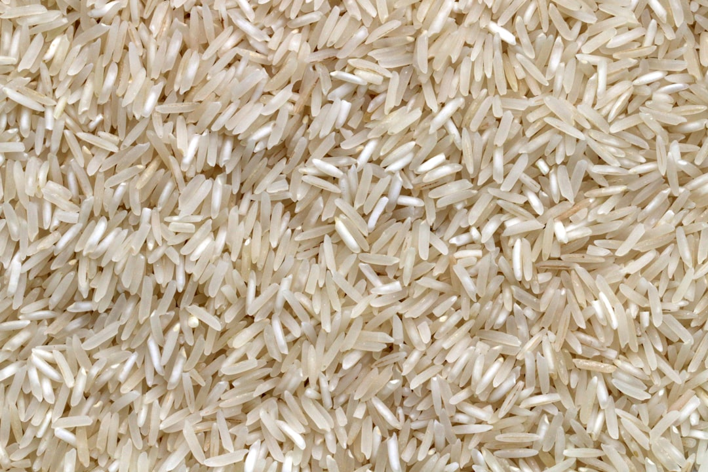

在華富邨的心臟地帶，王師傅的剪刀聲已經響了整整38年。他的小小理髮店夾在街市和茶餐廳之間，早已成為邨內的地標。店內的牆上掛滿了舊照片，記錄著這座屋邨的變遷，以及那些曾在這張舊皮椅上坐過的幾代人。
"每一個髮型都是一個故事。我看著這裡的孩子長大、結婚，然後帶著他們自己的孩子回來剪髮。"
—王師傅
王師傅的手藝承襲自父親，父親於1986年屋邨還相對嶄新時開設了這家店。幾十年來，這裡的技術幾乎未曾改變——細緻的剪刀功夫、熱毛巾敷面、傳統的刮鬍服務，以及與每位顧客真摯的閒話家常。儘管物價飛漲，他的收費卻始終維持在街坊價，這證明了他對服務社區的承諾遠大於對利潤的追求。
如今，隨著重建計劃逼近，理髮店的未來充滿不確定性。然而，王師傅依然樂觀，每天早上8點準時開門，剪刀磨得鋒利。他的忠實顧客，有些甚至專程從新界跨區回來光顧，只希望這段活著的歷史能再延續多一個38年
走進位於華珍樓地下的華富冰室，就像穿越了一條時光隧道，回到了1968年屋邨剛落成的年代。這裡保留著最傳統的冰室格局：綠白相間的紙皮石馬賽克地板、硬朗的木製卡位，以及牆上那些手寫的紅色餐牌。這裡沒有冷氣機的嗡嗡聲，只有吊扇在頭頂緩緩旋轉，攪動著半個世紀的空氣。
"這裡的奶茶不只是飲料，是街坊每天的『吊命水』。幾十年來，味道沒變，人情味也沒變。"
— 老夥計
華富冰室是邨內少數堅持傳統運作的店舖。這裡最出名的不是什麼花巧的新式甜品，而是實實在在的常餐：濃郁的沙嗲牛肉麵、厚切的西多士，還有一杯用黑白淡奶沖調的絲襪奶茶。對於許多華富邨的老居民來說，這裡是他們的公共飯堂。每天清晨，老街坊們習慣坐在同一個位置，點同一份早餐，即使不說話，彼此的陪伴也成為了一種默契。
不同於外面的連鎖快餐店，這裡的節奏很慢。店內的夥計大多上了年紀，看著邨裡的孩子長大成人，再帶著下一代回來光顧。這種跨越世代的連結，在急速發展的香港顯得尤為珍貴。
位於街市的「華富米行雜貨店」已與華富居民共渡了44個寒暑。老闆吳漢彬（Dee哥）的父親也是經營米行，當年Dee哥在灣仔的店舖因拆遷而被迫結業，經姐姐介紹得知華富邨有空舖，便來到這裡延續家業。如今華富邨已有56年歷史，隨著重建消息的落實，這間店舖似乎又再一次站在了命運的十字路口。

"無咗佢（超市）先大鑊！顧客唔係傻嘅，超市貴，啲人自然會嚟雜貨店買。"
— Dee哥，華富米行老闆
華富米行保留著舊式「糴米」的傳統，把米袋打開，讓客人按斤兩購買。這種靈活的方式不僅受街坊歡迎，甚至有住在貝沙灣的豪宅住戶專程駕車來光顧。面對近年附近新開的超市競爭，Dee哥反而認為是好事，因為有比較才有生意，而且地舖需要人流，店舖種類越多越能吸引人群。他更會在疫情期間觀察需求，增添火鍋底料和烘焙用品，展現出「幫人諗」的經營智慧。
身為華富商會主席，Dee哥曾反映希望重建後能保留地舖，而不僅僅是商場模式，但目前只得到「居民行先」的回覆。從灣仔到華富，從一次拆遷到另一次重建，Dee哥對於未來顯得淡然且務實。問及重建後會否再開店，他只說「到時再決定」。這間陪伴街坊半世紀的米行，究竟是Dee哥商業生涯的中轉站，還是終點站？或許只有時間能給出答案。
華富邨不僅是香港公共房屋的里程碑，更是前房屋署署長、華富邨總設計師廖本懷心中的「摯愛」。在「華富半世紀歷史文化之旅」的活動上，這位滿頭銀髮的設計者重遊舊地，深情地表示華富邨是他眾多作品中最喜歡的一個，甚至比馬頭圍邨和愛民邨更具特殊意義。
當年30歲的廖本懷對這片背山面海的土地「一見鍾情」。為了讓居民能最大程度地享受海景，他拒絕了簡單平整土地的做法，而是順應山勢，創造了獨特的「雙塔式」設計，讓大廈高低鑲嵌。他更引入了「小市鎮」概念，堅持在邨內設置街市、學校、商場，甚至建立了香港大會堂以外的第二個公共圖書館，實現自給自足的社區生活。
"每次坐飛機，我都會一直在窗邊凝望著她（華富邨），直到她在我眼底中消失⋯⋯有時她會在我夢中出現。"
— 廖本懷，華富邨總設計師
在設計過程中，廖本懷展現了對居民尊嚴的堅持。當時曾有人為了節省成本，建議單位不設獨立廚廁，但他為了居民的衛生和生活質素，態度強硬地表示：「如果不設獨立廚廁，我唔會再做。」幸而他的理念最終獲接納。他回憶起曾隨英國大臣參觀華富邨，一位不知道他身份的女戶主說，因為有了好的居住環境，女兒的哮喘病也痊癒了，這番話讓他感到無比滿足。
隨著2025年重建計劃的啟動，這座承載了半世紀歷史的屋邨將逐漸消失。雖然廖本懷承認當年華富邨因位置偏僻導致初期交通不便，但它作為香港首個市鎮概念公屋的地位無可取代。對於這位總設計師來說，華富邨不僅是建築圖紙上的線條，更是一段永遠縈繞在夢中的記憶。